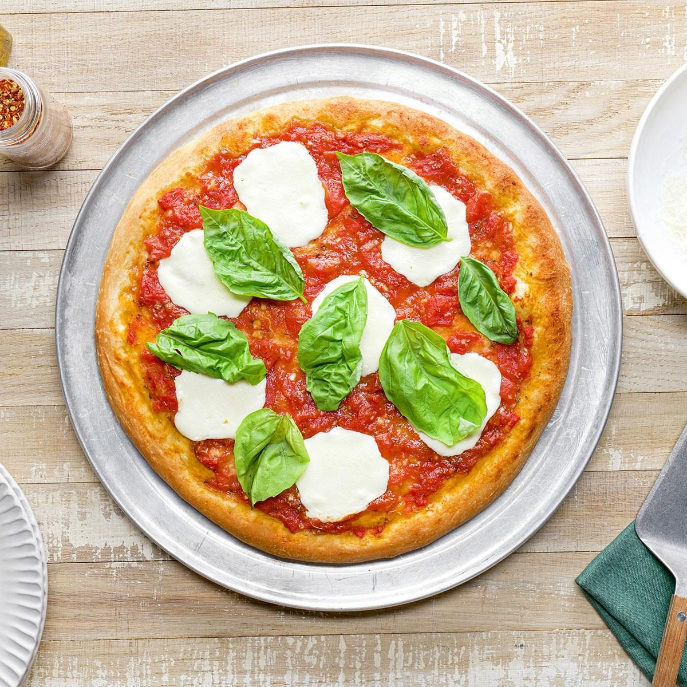

Home
Pizza

Description
A simple yet flavorful pizza with a crisp crust, fresh tomato sauce,
creamy mozzarella, and fragrant basil leaves.
Ingredients
- Pizza dough (store-bought or homemade)
- 1 cup tomato sauce
- 200 g fresh mozzarella, sliced
- Fresh basil leaves
- Salt and pepper
Steps
-
Preheat oven: Set oven to 250°C (480°F) and prepare baking tray or pizza
stone.
-
Assemble: Spread tomato sauce on dough, add mozzarella and drizzle with
olive oil..
-
Bake: Cook for 8–10 minutes until cheese bubbles and crust is golden.
-
Finish: Top with fresh basil, season with salt and pepper, and serve
hot.